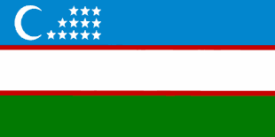
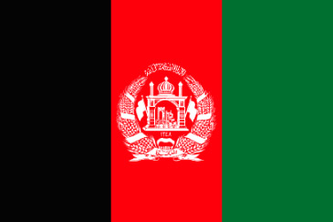
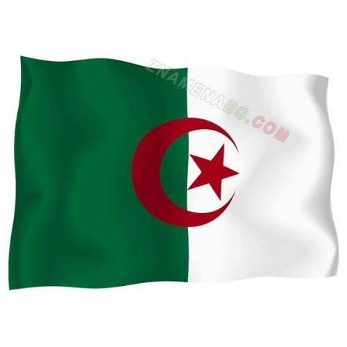

AQSH
.svg.png)
Bu AQSH davlati bayrog`i
Russia

Bu Russia davlati bayrog`i
O'zbekiston
Bu O'zbekiston davlati bayrog`i
Gretsiya
Bu Gretsiya davlati bayrog`i
Hitoy
Bu Hitoy davlati bayrog`i
Kariya
Bu Kariya davlati bayrog`i
Hindiston
Bu Hindiston davlati bayrog`i
Lo'ndin
.svg.webp)
Bu Lo'ndin davlati bayrog`i
Argintina
Bu Argintina davlati bayrog`i
Afg'oniston
Bu Afg'oniston davlati bayrog`i
Bahrayin

Bu Bahrayin davlati bayrog`i
Bruney
Bu Bruney davlati bayrog`i
Brundi
Bu Brundi davlati bayrog`i
Vatikan
Bu Vatikan davlati bayrog`i
Gaiti
Bu Gaiti davlati bayrog`i
Gabon
Bu Gabon davlati bayrog`i
Gana
Bu Gana davlati bayrog`i
Daniya
Bu Daniya davlati bayrog`i
Jazoir
Bu Jazoir davlati bayrog`i